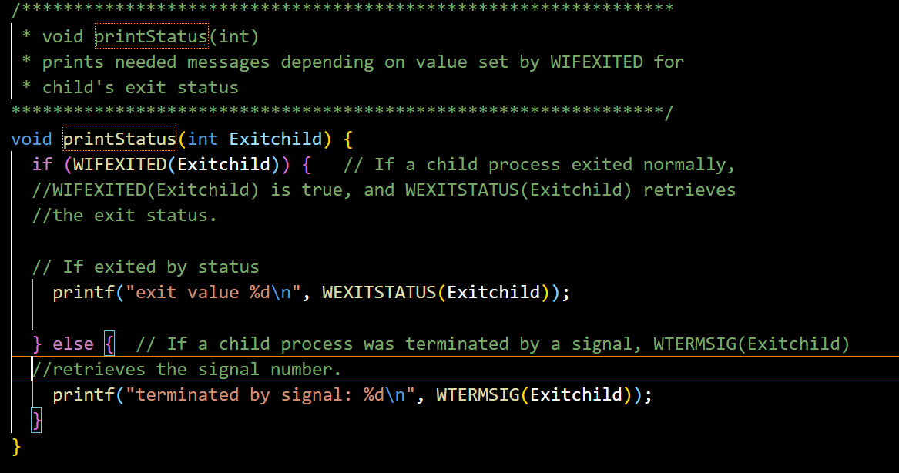
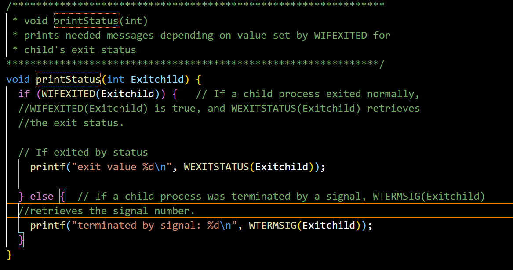

Goal of the Assignment
The goal of the smallsh assignment is to create a simple Unix shell program in C that mimics basic features of a well-known shell, like Bash. The shell must:
- Provide a command prompt for the user to input commands.
- Handle special symbols for input/output redirection (<, >) and background execution (&).
- Execute both built-in commands (
exit,cd,status) and external commands by forking new processes. - Implement signal handling for
SIGINT(Ctrl+C) andSIGTSTP(Ctrl+Z) to manage foreground and background processes. - Support variable expansion for the process ID (
$$). - Manage the execution of commands in the foreground and background, ensuring proper control over process execution and termination.
Objectives
- Command Prompt:
- Implement a command prompt that displays a colon (:) for each new input.
- Ensure the shell handles blank lines and comments, ignoring lines starting with #.
- Variable Expansion:
- Expand the variable
$$to the process ID of the shell for any command input.
- Expand the variable
- Built-in Commands:
- Implement built-in commands
exit,cd, andstatus. - Ensure
exitterminates the shell and cleans up any child processes. - Implement
cdto change the current directory, with support for absolute and relative paths. - Implement
statusto report the exit status or signal of the last foreground process.
 

- Implement built-in commands
- Executing Other Commands:
- Implement process creation using
fork(),exec()(viaexecvp), andwaitpid()for handling external commands. - Use the
PATHenvironment variable to locate executables for non-built-in commands.
- Implement process creation using
- Input and Output Redirection:
- Implement input (<) and output (>) redirection using
dup2(), ensuring files are opened correctly and errors are handled.
- Implement input (<) and output (>) redirection using
- Foreground and Background Execution:
- Handle commands with & to execute in the background, with process control through
fork(). - In getALine(), when parsing user input, the program checks if the last token is "&". If so, it sets the bg flag to 1, indicating that the command should run in the background. The global variable allowBG determines whether background execution is enabled. If the user presses CTRL+Z, allowBG toggles between allowing or disallowing background execution.
- callExec() is responsible for executing external commands. The program forks a child process using fork(), creating a duplicate process. The child process (case 0: in switch(spawnPid)) replaces itself with the command using execvp(). If execution fails, it prints an error.
- For background processes, print the PID and handle termination messages.
- Background Execution: Parent Continues Without Waiting If bg == 1 (background execution requested) and allowBG == 1, the shell prints the child process ID (spawnPid) and immediately returns to the prompt. Instead of blocking, waitpid(spawnPid, childExitStatus, WNOHANG) is used, allowing the parent process to continue execution while the child runs in the background.
- If the command is a foreground process (bg == 0), the parent waits for the child process to complete using waitpid(spawnPid, childExitStatus, 0). This ensures that the shell does not display a new prompt until the command has finished execution.
- Ensure foreground commands wait for completion before displaying the prompt.
- Handle commands with & to execute in the background, with process control through
- Signal Handling (SIGINT, SIGTSTP):
- Implement signal handling for
SIGINT(Ctrl+C) to terminate foreground processes while ignoring it in the shell and background processes. - Implement signal handling for
SIGTSTP(Ctrl+Z) to toggle between allowing/disallowing background processes, displaying the appropriate messages when switching modes.
- Implement signal handling for
The shell should allow users to run commands, change directories, display exit statuses, and properly handle signals, all while supporting file redirection and background processing. This assignment provides hands-on experience with Unix system calls, process management, and signal handling, which are fundamental to understanding how shells and processes operate in Unix-like environments.
/***************************************************************
* Filename: smallsh.c
* smallsh runs bash commands in a a terminal. smallsh changes directories,
* prints status of last command and quits it's process. All other bash commands
* are passed to the exec function.
***************************************************************/
#include
#include
#include
#include //for signal handle redirection
#include //The fcntl() function provides for control over open files
//needed for The dup2() function that duplicates an open file descriptor.
//and
#include
#include
#include
#define INPUTLENGTH 2048
int allowBG = 1; //global so it can be accessed by callExec and SIGTSTPcatch
//declaring these functions seems to stop some compiler warnings
void getALine(char*[], int*, char[], char[], int);
void callExec(char*[], int*, struct sigaction, int*, char[], char[]);
void SIGTSTPcatch();
void printStatus(int);
/***************************************************************
* void getALine(char*[], int, char*, char*, int)
Takes an array of character pointers for the command line given by the user
takes a boolean to toggle the bg/fg state
takes 2 char arrays to store pontential redirection for std in/out
takes an int to replace the && with PID
***************************************************************/
void getALine(char* arr[], int* bg, char inputName[], char outputName[], int pid) {
char input[INPUTLENGTH];
int i, j;
// Print the terminal symbol ':'
printf(": ");
fflush(stdout);
fgets(input, INPUTLENGTH, stdin); //store stdin in input array
// Remove \n char
int found = 0;
for (i=0; !found && i it's part of the output file name
else if (!strcmp(token, ">")) {
token = strtok(NULL, space); //should have a space before
strcpy(outputName, token);
}
// If it does match those symbols it's part of a command
else {
arr[i] = strdup(token);
// Replace $$ with pid
for (j=0; arr[i][j]; j++) {
if (arr[i][j] == '$' && arr[i][j+1] == '$') {
arr[i][j] = '\0'; //instead of being printed, the content is stored as a
// C string in the buffer arr. (taking 256 as the maximum buffer capacity).
//Arguments at the end go in the format specifiers
snprintf(arr[i], 256, "%s%d", arr[i], pid);
}
}
}
// get next word
token = strtok(NULL, space);
}
}
/***************************************************************
* void callExec(char*[], int*, struct sigaction, int*, char[], char[])
takes a character pointer array with the command input
takes an int pointer for childExitStatus toggled by WIFEXITED
takes a struct to reset C^ signal to default behavior in child
takes an int pointer to toggle to bg state in main
takes 2 array storing possible input and output redirection locations
***************************************************************/
//This function is responsible for creating a new process to execute non-built-in commands.
void callExec(char* arr[], int* childExitStatus, struct sigaction defCsig, int* bg, char inputName[], char outputName[]) {
int input, output, result;
pid_t spawnPid = -5; //if we see -5 something bad happened
// Fork to a child to run exec
// mostly from the fork tutorial on canvas
spawnPid = fork();
//This creates a child process. The parent continues executing the shell,
//while the child process runs the requested command.
switch (spawnPid) {
case -1:
perror("Something bad happened. Hopefully you never see this message\n");
exit(1);
break;
case 0:
// Child process will use ^C as default. Change the signal handler as needed
defCsig.sa_handler = SIG_DFL;
sigaction(SIGINT, &defCsig, NULL);
// use the input to open the file for exec to execute input
if (strcmp(inputName, "")) { //if a string exists this will be positive and true
//Opens the file in read-only mode (O_RDONLY).
input = open(inputName, O_RDONLY);
if (input == -1) {
perror("Unable to open input file\n");
exit(1);
}
//Uses dup2(input, 0)
//to redirect stdin (file descriptor 0) to the input file
// duplicate the file pointer with dup2
result = dup2(input, 0); //0 for a read operation
//Handles errors if the file can't be opened or dup2() fails.
if (result == -1) {
perror("Unable to assign input file\n");
exit(2);
}
// close the original pointer
/*
FD_CLOEXEC:
It sets the close-on-exec flag for the file descriptor, which causes
the file descriptor to be automatically (and atomically) closed when
any of the exec-family functions succeed.
F_SETFD
Set the file descriptor flags for the specified file descriptor.
The argument is the new set of flags, as a variable of type int.
File descriptor flags are associated with a single file descriptor
and do not affect other file descriptors that refer to the same file.
The return value is 0 on success, or -1 on error
*/
fcntl(input, F_SETFD, FD_CLOEXEC);
}
// Handle output similar to input
if (strcmp(outputName, "")) { //if a string exists this will be positive and true
// open it. need O_CREAT so that if a file DNE we can make it
output = open(outputName, O_WRONLY | O_CREAT | O_TRUNC, 0666);
if (output == -1) {
perror("Unable to open output file\n");
exit(1);
}
// duplicate the file pointer with dup2
result = dup2(output, 1); //1 for a write operation
if (result == -1) {
perror("Unable to assign output file\n");
exit(2);
}
// close the original pointer
fcntl(output, F_SETFD, FD_CLOEXEC);
}
//execvp() searches for the command in the PATH environment variable
//and replaces the child process with the new program. If execution fails, it prints an error message.
if (execvp(arr[0], (char* const*)arr)) {
printf("%s: no such file or directory\n", arr[0]);
fflush(stdout);
exit(2);
}
break;
//The waitpid function is used to request status information from a child process
//Normally, the calling process is suspended until the child process makes status
//information available by terminating.
/***************************************************************
The return value is normally the process ID of the child process whose status is
reported. If there are child processes but none of them is waiting to be noticed,
waitpid will block until one is. However, if the WNOHANG option was specified,
waitpid will return zero instead of blocking.
If a specific PID to wait for was given to waitpid, it will ignore all other children
(if any). Therefore if there are children waiting to be noticed but the child whose
PID was specified is not one of them, waitpid will block or return zero as described
above.
***************************************************************/
//If running in the foreground, the shell waits until the child process finishes.
//If running in the background (when & is used and allowBG is enabled), it prints the process ID and continues execution.
default:
// wait for Execute of a process in the bg if & caught
//and when allowBG is toggled in SIGTSTPcatch
if (*bg && allowBG) {
pid_t actualPid = waitpid(spawnPid, childExitStatus, WNOHANG); //with WNOHANG parent cont
printf("bg pid is %d\n", spawnPid); //and waits for child in the backgroud
fflush(stdout);
}
// Or wait for execute in fg
else {
pid_t actualPid = waitpid(spawnPid, childExitStatus, 0);
}
//The program continuously checks for any terminated background processes
// Check for any terminated bg processes
//Other values for the pid argument have special interpretations.
//A value of -1 or WAIT_ANY requests status information for any child process
while ((spawnPid = waitpid(WAIT_ANY, childExitStatus, WNOHANG)) > 0) {
printf("\nchild %d terminated\n", spawnPid);
printStatus(*childExitStatus);
fflush(stdout);
}
}
}
/***************************************************************
* void SIGTSTPcatch()
This function changes Z^ signal so that it merely determines whether
exec is run in the fg or the bg. When control Z toggles allowBG and the &
command has set bg state in main to true then call waitpid using WNOHANG
so that the parent continues while the child executes.
any other case execute in fg. After execution, check for ended bg processes.
***************************************************************/
void SIGTSTPcatch() {
// If it's 1, set it to 0 and display Entering foreground message
if (allowBG == 1) {
char* msg = "Entering foreground-only mode (& is now ignored)\n\n";
write(1, msg, 50);
fflush(stdout);
allowBG = 0;
}
// If it's 0, set it to 1 and display Exiting foreground message
else {
char* msg2 = "Exiting foreground-only mode\n\n";
write (1, msg2, 30);
fflush(stdout);
allowBG = 1;
}
}
/***************************************************************
* void printStatus(int)
* prints needed messages depending on value set by WIFEXITED for
* child's exit status
***************************************************************/
void printStatus(int Exitchild) {
if (WIFEXITED(Exitchild)) { // If a child process exited normally,
//WIFEXITED(Exitchild) is true, and WEXITSTATUS(Exitchild) retrieves
//the exit status.
// If exited by status
printf("exit value %d\n", WEXITSTATUS(Exitchild));
} else { // If a child process was terminated by a signal, WTERMSIG(Exitchild)
//retrieves the signal number.
printf("terminated by signal: %d\n", WTERMSIG(Exitchild));
}
}
/* ---------------------- Main function --------------------- */
/*
Main sets up the default signal behavior for C^ and Z^ in the parent and
then loops while moreInput is true. The loop calls getALine to get input
needed for the shell. Any input not handled in main directly is passed to
callExec which will parse input and use it to call the built in exec
function.
* ---------------------------------------------------------- */
int main() {
int moreInput = 1;
int exitStatus = 0;
int bg = 0; //to toggle fg/bg state
char inFile[256] = ""; //for input file redirection to stdin
char outFile[256] = ""; //for output file redirection to stdout
char* input[512]; //for command line input
int i;
for (i=0; i<512; i++) {
input[i] = NULL;
}
//The structure sigaction, used to describe an action to be taken,
//is defined in the
//sa_handler:
//Pointer to a signal-catching function or one of the macros SIG_IGN or SIG_DFL.
//type: void(*) (int)
//sa_mask
//Additional set of signals to be blocked during execution
//of signal-catching function.
//type: sigset_t
//sa_flags
//Special flags to affect behavior of signal.
//type: int
//The shell itself should ignore SIGINT so that it doesn’t terminate when the user
//presses Ctrl+C.
//However, SIGINT should be forwarded to foreground processes to allow them to terminate.
// Redirect ^Z to SIGTSTPcatch()
struct sigaction sigTstp = {0}; //init to signal struct 0 so we can define action
sigTstp.sa_handler = SIGTSTPcatch; // point SIGTSTPcatch function to our custom handler
sigfillset(&sigTstp.sa_mask); //all other signals defined for POSIX are inc
sigTstp.sa_flags = 0; // Init flags for alternate SIGTSTP handler
sigaction(SIGTSTP, &sigTstp, NULL); // Redirect SIGTSTP to sigTstp
// Signal Handler to Ignore ^C
struct sigaction sigInt = {0}; //init to 0 so we can define action
sigInt.sa_handler = SIG_IGN; // define our custom handler as SIG_IGN to ignore C^ in parent
sigfillset(&sigInt.sa_mask); //sigfillset() to init the signal so that all other
//signals defined for POSIX are inc
sigInt.sa_flags = 0; // Init flags
sigaction(SIGINT, &sigInt, NULL); //redirect SIGINT to sigInt
int parentPID = getpid();
// Keep Getting input untill moreInput = 0
do { //call getALine to get strings to match for "exit", "cd", or "status"
getALine(input, &bg, inFile, outFile, parentPID);
// Display a # or a blank line
//or if a space go to next line <-- new, maybe breaks it?
if (input[0][0] == '#' || input[0][0] == '\0' || input[0][0] == ' ') {
continue;
}
// match "cd" to Change directory
else if (strcmp(input[0], "cd") == 0) {
// Change to the directory specified
if (input[1]) { //if cd was valid and more input exists
if (chdir(input[1]) == -1) { //try to change to the directory
printf("Directory not found.\n"); //returns -1 if not successful
fflush(stdout); //flush output buffer
}
} else {
// When directory not given, go to home dir
chdir(getenv("HOME"));
}
}
// Quit program by setting moreInput to 0 if exit is entered.
else if (strcmp(input[0], "exit") == 0) {
//break the while loop by making moreInput = false
moreInput = 0;
}
// get the status and print it
else if (strcmp(input[0], "status") == 0) {
printStatus(exitStatus); //Using this function: that uses this signal WEXITSTATUS
}
// otherwise, pass any other string to execvp called in function callExec
else {
callExec(input, &exitStatus, sigInt, &bg, inFile, outFile);
}
// Reset input
int k;
for (k=0; input[k]; k++) {
input[k] = NULL;
}
// Reset Null terminators to overwrite last input and output
inFile[0] = '\0';
outFile[0] = '\0';
// Reset bg flag
bg = 0;
} while (moreInput);
return 0;
}